一、长沙麻将
长沙麻将增加了四喜、板板胡、六六顺、缺一色、天胡、地胡牌型
二、牌数
共108张：筒、索、万、不带东、南、西、北风、中、发、白
三、摸牌规则
游戏开始，庄家得14张牌，闲家得13张牌。庄家从牌中选1张丢出，闲家有权要那张丢出的牌。庄家的下家，有权吃碰杠胡。其它两家则只可碰杠胡，"胡"比"碰"与"杠"优先，"碰"与"杠"比"吃"优先
四、基本牌型
1、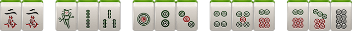
2、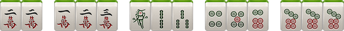
3、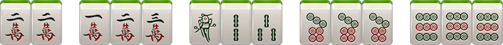
4、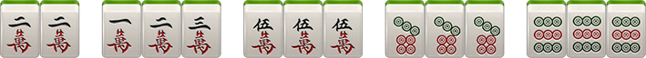
5、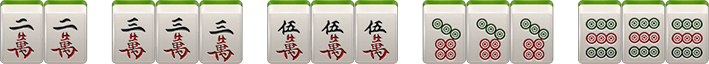
注:1对(22)是将牌，长沙麻将需要2、5、8做将，比如2万、5条、8筒等，某些牌型则将可以为任意1对
五、胡牌类型
1、小胡
（1）、大四喜: 起牌后，玩家手上已有4张一样的牌，即可胡牌 (四喜计分等同小胡自摸)
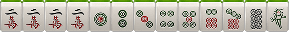（2）、板板胡: 起牌后，玩家手上没有一张 2、5 、8 (将牌)，即可胡牌(等同小胡自摸)
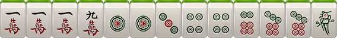（3）、缺一色: 起牌后，玩家手上筒、索、万任缺一门，即可胡牌(等同小胡自摸)
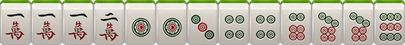（4）、六六顺: 起牌后，玩家手上已有 2 个刻子(刻子：3个一样的牌)，即可胡牌(等同小胡自摸)
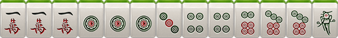（5）、平胡: 2 、5 、8 作将，其余成刻子或顺子，即可胡牌
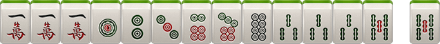2、大胡
（1）、碰碰胡：1万1万1万、1筒1筒1筒、7筒7筒7筒、 3条3条3条、 7条7条，乱将，即表示任意数字的牌都可以做将，可以是2、5、8牌做将，也可以是1、3、4、6、7、9牌做将，可碰、杠、自摸
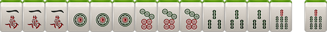（2）、将将胡：玩家手上每1张牌都为 2 、5、8 ，玩牌过程中可碰牌
（3）、清一色：同一种花色的牌组成，任意一种胡牌规则皆可，可吃、可碰、可杠，如果还满足其它规则的大胡，则在原有大胡基础上叠加
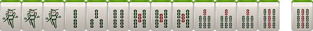（4）、海底捞月：最后一张牌为海底牌。海底胡牌为大胡，需要将(将的种类根据当前牌型决定)
（5）、海底炮：如果A玩家要了海底牌，而又不能胡牌，必须打出；B玩家没有要海底牌，而又胡这张海底牌，即为B玩家胡牌。同时，如果C玩家和D玩家也能胡，则通胡
（6）、七小对：任意花色组成的七对牌
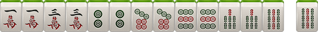（7）、豪华七小对：手中任意七对牌，其中有4张一样的牌，但不能杠，算2个大胡的分，即12分
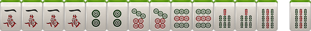（8）、杠上开花：玩家有4张一样的牌，即可选择开杠(听牌的情况下)。开杠要补2张牌，补张的牌被开杠者胡则为杠上开花，算大胡
（9）、抢杠胡：暗杠不能抢杠胡,只有明杠可以抢胡。玩家在明杠的时候，其他玩家可以胡被杠的此张牌，叫抢杠胡
（10）、杠上炮：开杠者补2张牌，补张的牌开杠者不能胡，而其他玩家可以胡，则属于杠上炮
（11）、全求人：吃、碰、补张以及杠后只剩一张(熟称单调)由别人打出或者自己摸到相同牌张即可胡牌
（12）、双豪华七小队：手中任意七对牌，其中有2组4张一样的牌，但没有杠。算3个大胡的分，即18分
六、庄家分配
1、第一局由创建房间者为庄家
2、以后谁胡牌，下局谁做庄
3、如果出现通炮情况，则下轮由放炮玩家当庄家
4、如果有人要了海底牌后却没人胡则要海底牌的玩家下局当庄家
5、如果四个玩家都不要海底牌，则下轮由第一个可以选择海底牌的玩家当庄家
6、如果此局无海底牌（即海底牌被补张），则补海底牌的玩家下局当庄家
七、抓鸟
抓鸟在胡牌后进行，由胡牌方进行（一炮多响时由点炮玩家进行），此时从牌堆上取创建房间时选得鸟数张牌，其中鸟牌以胡牌方为第1序位，当鸟牌的序数为159时，为胡牌方A的鸟牌，26为胡牌方的下家B的鸟牌，37为胡牌方的对家C的鸟牌，48为胡牌方的上家D的鸟牌。例如自摸胡牌方中鸟1个，则其他人多输1分，且庄家中鸟输赢多一分
八、特殊规则
1、通炮：即几个玩家可胡同一张牌，此牌即为通炮
2、补张：
A 、补张后可胡牌，算作自摸
B 、补张从最后一叠牌的上张拿，再拿下张，一次一张，依此类推，不可随意选择
C 、如果补张时只剩下海底，则补海底牌，此局则无海底牌
3、海底牌漫游：即玩家可选择是否要海底牌，按照座次轮询
4、漏胡：如果玩家漏掉了炮胡，则在玩家摸牌前禁止炮胡，摸牌后一切正常，只对该玩家有效，其他玩家正常
5、杠牌后只能由系统从最后面的牌中获得，如果玩家因为补张的牌胡了算杠上开花，如果没胡则必须打出该补张的牌，如果有其他玩家胡了打出的该补张牌则算杠上炮，属大胡。而且一旦开杠后摸进任何牌“开杠者“如果不能胡则必须打出，直到胡牌或放炮为止。开杠打出的2张牌如果没人胡可以进行吃碰杠补操作
九、计分规则
1、小胡自摸：每人输2分，总得分2*3=6分；庄家自摸，每人输3分
2、小胡接炮：点炮方输1分，总得分=1分；庄家接炮，点炮方输2分
3、大胡自摸：每人输6分，总得分6*3=18分；庄家自摸，每人输7分
4、大胡接炮：点炮方输6分，总得分=6分。庄家接炮，点炮方输7分
注：
1) 小胡和小胡之间能累计计算（如四喜+小胡）
2）小胡和大胡之间累计计算
3）大胡之间可以累计计算（算加法）如：七小对＋清一色
4）多种牌型累计计算时，庄闲、抓鸟只计算一次胡牌类型，如胡牌为自摸杠上开花一次(6分)、将将胡（6分），并同时为庄（1*3分）且庄家中2鸟（2*3分），即总分为45分